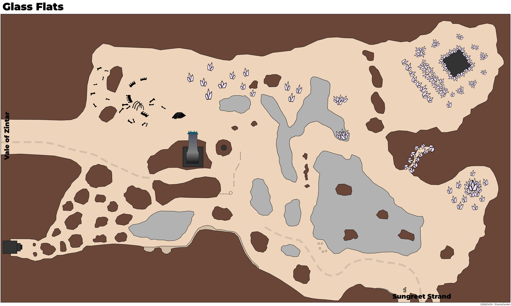
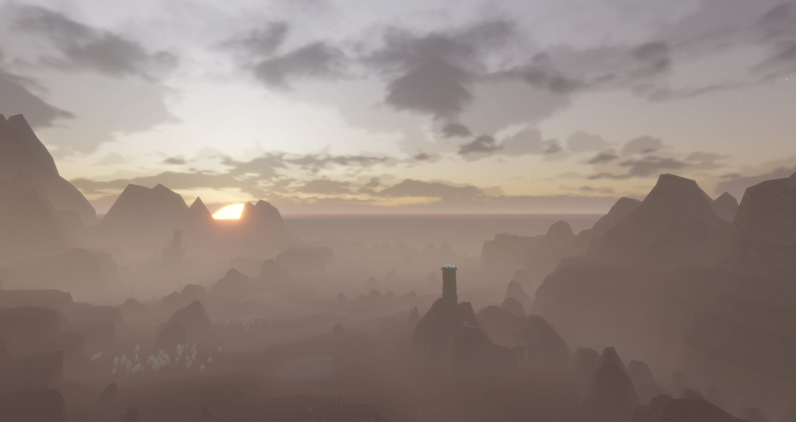

Glass Flats
Glass Flats are a very dangerious area north of Night Harbor beyond the farms of Sungreet Strand.
Map


Named mobs
Mobs & NPCs (camps by level)
Rows with a level are huntable camps; rows without are usually town NPCs or not yet documented.
| Name | Lvl | Race | Class | Where | Notes |
|---|---|---|---|---|---|
| a Muggrah bonestealer | 18-19 | Goblin | - | - | |
| a Muggrah frightener | 18-19 | Goblin | Necromancer | - | |
| a Muggrah raider | 18-19 | Goblin | - | - | |
| a Muggrah robber | 18-19 | Goblin | - | - | |
| a Muggrah scavenger | 18-19 | Goblin | - | - | |
| a Muggrah scrapper | 18-19 | Goblin | - | - | |
| a Muggrah shaman | 18-19 | Goblin | Shaman | - | Shiny Pyrite Coin |
| a Muggrah spiritualist | 18-19 | Goblin | - | - | Shiny Pyrite Coin |
| a Muggrah stabber | 18-19 | Goblin | - | - | |
| a giant sand tick | ~20-22 | Beetle | - | - | |
| a Szuurian viper | 24-26 | Snake | - | - | |
| a dusty dire jackal | 24-26 | Wolf | - | - | Medium Quality Jackal Pelt |
| a sand strider | 25-27 | Beetle | - | - | |
| a dust asp | 26 | Snake | - | - | |
| a giant dust scarab | 27-28 | Beetle | - | - | |
| a brackish basilisk | 30-31 | Basilisk | - | - | |
| a grizzled raider | ~31+ | Human | - | - | |
| a highwayman prospect | ~31+ | Human | - | - | |
| a road captain | ~31+ | Human | - | - | |
| a road deacon | ~31+ | Human | Cleric | - | |
| a seasoned marauder | ~31+ | Human | - | - | |
| a seasoned spellslinger | ~31+ | Human | - | - | |
| a veteran brigand | ~31+ | Human | - | - | |
| a dust drake | >33 | - | Druid | - | |
| a shard bat | ~33-35 | Bat | - | - | |
| a salt elemental | ~34-36 | Elemental | Fighter | - | Crystallized Salt |
| an ancient basilisk | 34-35 | Basilisk | - | - | |
| a crystallized skeleton | ~35-40 | Skeleton | Fighter | - | |
| a sand giant scout | ~36-37 | Giant | - | - | |
| a crystallized stormcaller | >42 | Skeleton | Druid | - | |
| a cultist lookout | 43 | Human | - | - | |
| a cultist guard | 44 | Human | - | - | |
| a cult initiate | 45 | Human | - | - | |
| A wailing wench | 46+ | Undead | - | - | |
| a skeletal archer (GF) | 46-48 | Skeleton | Archer | - | |
| a ebon acolyte | ~48-50 | Human | Wizard | - | |
| a heretical zealot | ~48-50 | Human | Cleric | - | |
| a shadowed scribe | ~48-50 | Human | Wizard | - | |
| a veiled emissary | ~48-50 | Human | Enchanter | - | |
| a visiting cultist | ~48-50 | Human | - | - | |
| a whispering adapt | ~48-50 | Human | Necromancer | - | |
| a wyrmseer | ~48-50 | Human | - | - | |
| a wyrmseer vizier | ~48-50 | Human | - | - | |
| an abyssal emissary | ~48-50 | Human | - | - | |
| an ashen knight | ~48-50 | Human | Inquisitor | - | |
| a drowned knight | 52 | Human | - | - | |
| Layla Faraj | - | Human | - | - | |
| Nadia Al-Hakim | - | Human | - | - | Quest NPC |
| Sami Hassoun | - | Human | - | - | |
| Tarek Mansur | - | Human | - | - | |
| a Pyrmos mercenary | - | Ogre | - | - | |
| a bone fiend | - | Skeleton | - | - | |
| a carrion beetle | - | Beetle | - | - | |
| a crystal dervish | - | Elemental | - | - | |
| a crystallized fakir | - | Skeleton | - | - | |
| a crystallized giant | - | Skeleton | - | - | |
| a crystallized researcher | - | Skeleton | - | - | |
| a crystallized suncaller | - | Skeleton | - | - | |
| a crystallized theologian | - | Skeleton | - | - | |
| a death's head scavenger | - | - | - | - | |
| a decaying reservist | - | - | - | - | |
| a delirious cultist | - | Human | - | - | |
| a fallen freeman | - | - | - | - | |
| a haunted merchant | - | - | - | - | |
| a risen peasant | - | Ghost | - | - | |
| a salt gatherer | - | Human | - | - | |
| a skeletal footman | - | Skeleton | - | - | |
| a whirling blade dervish | - | - | - | - |
Quests
| Quest | Reward | Giver | Min lvl |
|---|---|---|---|
| Example Quest Name | Example Reward | Example Quest Giver | - |
| Example Quest Name | Example Reward | Example Quest Giver | - |
Gear that drops here
| Slot | Item | Key stats (wiki) | How to get | Lvl | Classes |
|---|---|---|---|---|---|
| Bone Chips | no stats listed on wiki | Quest: Bone Chips for Moon Dances (Moon Dances, Faelindral, min lvl 1) Quest: Bone Chips for Squire Ryland (Squire Ryland, Night Harbor, min lvl 1) Quest: Druid Starter Quest (Faelindral) (Sylvarya Starveil, Faelindral, min lvl 1) Quest: Find Delilah's Pet (Delilah, Underdocks, min lvl 1) | 1 | NEC SHD | |
| Primary, Secondary | Torch | Effect: Torch (Passive. Must Equip. Level: 1) | Quest: Pests at the Farm (Farmer Ammar, Night Harbor, min lvl 1) Vendor: A goods merchant — Night Harbor, Shallow Shoals; A greedy halfling — Night Harbor; A shifty elf — Evershade Weald Crafted: Survival (trivial X) Drop: A rotting skeleton (lvl 1) — Night Harbor, Noob Yard | 1 | All classes |
| Primary, Secondary | Corroded Bronze Axe | DMG 9 / DLY 42 | Drop: a bulky bandit (lvl 26) — Scarwood, - Drop: a risen commander (lvl -) — Shaded Dunes, Ancient Crypt Entrance Drop: an ashira warrior (lvl 6-7) — Sungreet Strand, - Drop: an ashira preserver (lvl -) — Sungreet Strand, - | 6 | BST FTR INQ PAL RNG SHD SPB |
| Primary | Corroded Bronze Battle Axe | DMG 14 / DLY 54 | Drop: an ashira huntmaster (lvl 16-18) — Tel Ekir, - Drop: an ashira ain guard (lvl -) — Tel Ekir, - Drop: a Bloodynose spooker (lvl ~13-14) — Tel Ekir, - Drop: a skeletal acolyte (lvl 17) — Ancient Crypt, - | 6 | BST FTR INQ PAL SHD |
| Feet | Corroded Bronze Chain Boots | AC 5 | Drop: an ashira mystic (lvl -) — Tel Ekir, - Drop: a Bloodynose sergeant (lvl 15) — Tel Ekir, - Drop: a Bloodchain guard (lvl unconfirmed) — Blacktide Bay Drop: a skeletal guard (lvl ~12-15) — Ancient Crypt, - | 6 | BRD CLR FTR INQ PAL RNG ROG SHD SHM |
| Hands | Corroded Bronze Chain Gloves | AC 7 | Drop: an ashira ain guard (lvl -) — Tel Ekir, - Drop: a fallen sentinel (lvl 19) — Ancient Crypt, - Drop: an ashira warrior (lvl 6-7) — Sungreet Strand, - Drop: an ashira luminary (lvl unconfirmed) — Sungreet Strand | 6 | BRD CLR FTR INQ PAL RNG ROG SHD SHM |
| Neck | Corroded Bronze Chain Gorget | AC 2 | Drop: an ashira huntmaster (lvl 16-18) — Tel Ekir, - Drop: an ashira mystic (lvl -) — Tel Ekir, - Drop: a Bloodynose schemer (lvl unconfirmed) — Tel Ekir Drop: an ashira warrior (lvl 6-7) — Sungreet Strand, - | 6 | BRD CLR FTR INQ PAL RNG ROG SHD SHM |
| Legs | Corroded Bronze Chain Leggings | AC 8 | Drop: an ashira ain guard (lvl -) — Tel Ekir, - Drop: a Bloodynose captain (lvl 16) — Tel Ekir, - Drop: a Bloodynose schemer (lvl unconfirmed) — Tel Ekir Drop: a trail bandit (lvl 26) — Scarwood, - | 6 | BRD CLR FTR INQ PAL RNG ROG SHD SHM |
| Shoulders | Corroded Bronze Chain Shoulderguards | AC 8 | Drop: a Sangrel striker (lvl 18-22) — Keeper's Bight, - Drop: a poacher pathfinder (lvl 28-30) — Keeper's Bight, Poacher Camp, Bear Cave Drop: a Sangrel hunter (lvl 18-22) — Keeper's Bight, - Drop: a Blacktide brute (lvl 25) — Keeper's Bight, - | 6 | BRD CLR FTR INQ PAL RNG ROG SHD SHM |
| Chest | Corroded Bronze Chain Tunic | AC 9 | Drop: an ashira ain guard (lvl -) — Tel Ekir, - Drop: a Bloodynose witch doctor (lvl 15) — Tel Ekir, - Drop: a skeletal soldier (lvl 17) — Ancient Crypt, - Drop: a dusty skeleton (lvl -) — Fallen Pass, - | 6 | BRD CLR FTR INQ PAL RNG ROG SHD SHM |
| Primary, Secondary | Corroded Bronze Dagger | DMG 5 / DLY 24 | Drop: an ashira ain guard (lvl -) — Tel Ekir, - Drop: an ashira naturalist (lvl -) — Tel Ekir, - Drop: a skeletal acolyte (lvl 17) — Ancient Crypt, - Drop: a skeletal soldier (lvl 17) — Ancient Crypt, - | 6 | ARC BRD BST ELE ENC FTR NEC RNG ROG SHD SHM SPB WIZ |
| Primary | Corroded Bronze Great Scythe | DMG 12 / DLY 46 | Drop: a skeletal soldier (lvl 17) — Ancient Crypt, - Drop: a skeletal acolyte (lvl 17) — Ancient Crypt, - Drop: a ghastly cook (lvl 16) — Ancient Crypt, - Drop: a cultist (lvl -) — Shaded Dunes, Ancient Crypt Entrance | 6 | BST DRU FTR INQ NEC RNG SHD SPB |
| Secondary | Corroded Bronze Kite Shield | AC 8 | Drop: a Sangrel striker (lvl 18-22) — Keeper's Bight, - Drop: a mercenary magus (lvl unconfirmed) — Keeper's Bight Drop: a poacher pathfinder (lvl 28-30) — Keeper's Bight, Poacher Camp, Bear Cave Drop: a Bloodynose frightener (lvl ~15-18) — Tel Ekir, - | 6 | BRD FTR INQ PAL RNG SHD |
| Primary | Corroded Bronze Long Spear | DMG 12 / DLY 48 | Drop: an ashira alpha (lvl ~14) — Tel Ekir, - Drop: a Bloodynose frightener (lvl ~15-18) — Tel Ekir, - Drop: a Bloodynose witch doctor (lvl 15) — Tel Ekir, - Drop: a restless skeleton (lvl 18-21) — Fallen Pass, - | 6 | ARC BRD BST FTR INQ RNG ROG SHD SHM |
| Shirt | Corroded Bronze Plate Arming Doublet | no stats listed on wiki | Drop: a skeletal soldier (lvl 17) — Ancient Crypt, - Drop: a skeletal guard (lvl ~12-15) — Ancient Crypt, - Drop: a Muggrah brawler (lvl 20+) — Sungreet Strand, Muggrah Mountain Camp Drop: an ashira warrior (lvl 6-7) — Sungreet Strand, - | 6 | CLR FTR INQ PAL SHD |
| Feet | Corroded Bronze Plate Boots | AC 6 | Drop: an ashira ain guard (lvl -) — Tel Ekir, - Drop: a fallen sentinel (lvl 19) — Ancient Crypt, - Drop: a skeletal soldier (lvl 17) — Ancient Crypt, - Drop: a fallen sergeant (lvl ~18-20) — Ancient Crypt, - | 6 | CLR FTR INQ PAL SHD |
| Chest | Corroded Bronze Plate Breastplate | AC 11 | Drop: a Sangrel striker (lvl 18-22) — Keeper's Bight, - Drop: a Muggrah brawler (lvl 20+) — Sungreet Strand, Muggrah Mountain Camp Drop: an ashira warrior (lvl 6-7) — Sungreet Strand, - Drop: a gruff farmhand (lvl unconfirmed) — Sungreet Strand | 6 | CLR FTR INQ PAL SHD |
| Back | Corroded Bronze Plate Cloak | AC 4 | Drop: a skeletal soldier (lvl 17) — Ancient Crypt, - Drop: a fallen sergeant (lvl ~18-20) — Ancient Crypt, - Drop: an ashira warrior (lvl 6-7) — Sungreet Strand, - Drop: a Muggrah scrapper (lvl 17+) — Sungreet Strand, Muggrah Mountain Camp | 6 | CLR FTR INQ PAL SHD |
| Hands | Corroded Bronze Plate Gauntlets | AC 8 | Drop: an ashira ain guard (lvl -) — Tel Ekir, - Drop: a stumbling skeleton (lvl 14) — Night Harbor, Crypt (Night) Drop: a river pirate (lvl unconfirmed) — Night Harbor Drop: a mercenary (lvl unconfirmed) — Night Harbor | 6 | CLR FTR INQ PAL SHD |
| Waist | Corroded Bronze Plate Girdle | AC 4 | Drop: a Muggrah brawler (lvl 20+) — Sungreet Strand, Muggrah Mountain Camp Drop: an ashira warrior (lvl 6-7) — Sungreet Strand, - Drop: a henchman (lvl unconfirmed) — Sungreet Strand Drop: a Muggrah scrapper (lvl 17+) — Sungreet Strand, Muggrah Mountain Camp | 6 | CLR FTR INQ PAL SHD |
| Head | Corroded Bronze Plate Helm | AC 9 | Drop: a bulky bandit (lvl 26) — Scarwood, - Drop: a ghastly cook (lvl 16) — Ancient Crypt, - Drop: a restless skeleton (lvl 18-21) — Fallen Pass, - Drop: a dusty skeleton (lvl -) — Fallen Pass, - | 6 | CLR FTR INQ PAL SHD |
| Shoulders | Corroded Bronze Plate Pauldrons | AC 10 | Drop: an ashira warrior (lvl 6-7) — Sungreet Strand, - Drop: a Muggrah scrapper (lvl 17+) — Sungreet Strand, Muggrah Mountain Camp Drop: a gruff farmhand (lvl unconfirmed) — Sungreet Strand Drop: a bodyguard (lvl unconfirmed) — Sungreet Strand | 6 | CLR FTR INQ PAL SHD |
| Face | Corroded Bronze Plate Visor | AC 4 | Drop: a skeletal soldier (lvl 17) — Ancient Crypt, - Drop: a skeletal guard (lvl ~12-15) — Ancient Crypt, - Drop: an ashira elite guard (lvl ~27) — Tel Ekir, - Drop: a Muggrah scrapper (lvl 17+) — Sungreet Strand, Muggrah Mountain Camp | 6 | CLR FTR INQ PAL SHD |
| Primary, Secondary | Corroded Bronze Scimitar | DMG 7 / DLY 36 | Drop: an ashira ain guard (lvl -) — Tel Ekir, - Drop: an ashira naturalist (lvl -) — Tel Ekir, - Drop: a Bloodynose witch doctor (lvl 15) — Tel Ekir, - Drop: a Bloodynose frightener (lvl ~15-18) — Tel Ekir, - | 6 | ARC BRD BST DRU FTR INQ PAL RNG ROG SHD SPB WIZ |
| Primary, Secondary | Corroded Bronze Scythe | DMG 6 / DLY 28 | Drop: a skeletal soldier (lvl 17) — Ancient Crypt, - Drop: a fallen sentinel (lvl 19) — Ancient Crypt, - Drop: a Muggrah brawler (lvl 20+) — Sungreet Strand, Muggrah Mountain Camp Drop: an ashira warrior (lvl 6-7) — Sungreet Strand, - | 6 | BST DRU FTR INQ NEC RNG SHD SPB |
| Primary, Secondary | Corroded Bronze Shortsword | DMG 5 / DLY 26 | Drop: an ashira ain guard (lvl -) — Tel Ekir, - Drop: an ashira alpha (lvl ~14) — Tel Ekir, - Drop: an ashira naturalist (lvl -) — Tel Ekir, - Drop: a Bloodynose frightener (lvl ~15-18) — Tel Ekir, - | 6 | ARC BRD BST FTR INQ PAL RNG ROG SHD SPB WIZ |
| Secondary | Corroded Bronze Tower Shield | AC 10 | Drop: a Bloodynose frightener (lvl ~15-18) — Tel Ekir, - Drop: an ashira naturalist (lvl -) — Tel Ekir, - Drop: a Bloodynose sergeant (lvl 15) — Tel Ekir, - Drop: a dusty skeleton (lvl -) — Fallen Pass, - | 6 | FTR INQ PAL SHD |
| Primary, Secondary | Corroded Bronze Trident | DMG 7 / DLY 32 | Drop: a skeletal soldier (lvl 17) — Ancient Crypt, - Drop: an ashira luminary (lvl unconfirmed) — Sungreet Strand Drop: an ashira spearthrower (lvl ~20) — Sungreet Strand, - Drop: a Muggrah naturest (lvl unconfirmed) — Sungreet Strand | 6 | ARC BRD BST FTR INQ RNG ROG SHD SHM |
| Primary | Corroded Bronze War Lance | DMG 12 / DLY 48 | Drop: a stumbling skeleton (lvl 14) — Night Harbor, Crypt (Night) Drop: a lawbreaker (lvl unconfirmed) — Night Harbor Drop: a smuggler (lvl unconfirmed) — Night Harbor Drop: a goon (lvl unconfirmed) — Night Harbor | 6 | FTR INQ PAL SHD |
| Primary, Secondary | Corroded Bronze Warhammer | DMG 6 / DLY 30 | Drop: a Sangrel shadowblade (lvl 18-22) — Keeper's Bight, - Drop: a poacher pathfinder (lvl 28-30) — Keeper's Bight, Poacher Camp, Bear Cave Drop: a Blacktide raider (lvl 23-24) — Keeper's Bight, - Drop: a Sangrel striker (lvl 18-22) — Keeper's Bight, - | 6 | BRD BST CLR DRU FTR INQ MNK PAL RNG ROG SHD SHM SPB |
| Primary, Secondary | Cracked Fine Wood Staff | DMG 7 / DLY 33 | Drop: an ashira ain guard (lvl -) — Tel Ekir, - Drop: an ashira spearthrower (lvl -) — Tel Ekir, - Drop: a Bloodynose frightener (lvl ~15-18) — Tel Ekir, - Drop: an ashira naturalist (lvl -) — Tel Ekir, - | 6 | All classes |
| Waist | Tattered Hide Belt | AC 5 | Drop: an ashira naturalist (lvl -) — Tel Ekir, - Drop: an ashira elite guard (lvl ~27) — Tel Ekir, - Drop: an ashira spearthrower (lvl -) — Tel Ekir, - Drop: a Sangrel grappler (lvl 18-22) — Keeper's Bight, - | 6 | ARC BRD BST CLR DRU FTR INQ MNK PAL RNG ROG SHD SHM SPB |
| Wrist | Tattered Hide Bracer | AC 3 | Drop: a zealot (lvl unconfirmed) — Keeper's Bight Drop: a poacher pathfinder (lvl 28-30) — Keeper's Bight, Poacher Camp, Bear Cave Drop: a Sangrel striker (lvl 18-22) — Keeper's Bight, - Drop: a Blacktide brute (lvl unconfirmed) — Blacktide Bay | 6 | ARC BRD BST CLR DRU FTR INQ MNK PAL RNG ROG SHD SHM SPB |
| Head | Tattered Hide Cap | AC 4 | Drop: Mirrielle Bromm (lvl unconfirmed) — Fallen Pass Drop: a dusty skeleton (lvl -) — Fallen Pass, - Drop: a restless ghoul (lvl -) — Fallen Pass, - Drop: a restless skeleton (lvl 18-21) — Fallen Pass, - | 6 | ARC BRD BST CLR DRU FTR INQ MNK PAL RNG ROG SHD SHM SPB |
| Back | Tattered Hide Cloak | AC 2 | Drop: a Bloodchain sentry (lvl unconfirmed) — Blacktide Bay Drop: a Blacktide brute (lvl unconfirmed) — Blacktide Bay Drop: a shady farmer (lvl -) — Keeper's Bight, Farms, south of Penshaw Drop: a Blacktide raider (lvl 23-24) — Keeper's Bight, - | 6 | ARC BRD BST CLR DRU FTR INQ MNK PAL RNG ROG SHD SHM SPB |
| Neck | Tattered Hide Gorget | AC 2 | Drop: an ashira spearthrower (lvl -) — Tel Ekir, - Drop: a Bloodynose captain (lvl 16) — Tel Ekir, - Drop: an ashira naturalist (lvl -) — Tel Ekir, - Drop: a Blacktide raider (lvl unconfirmed) — Blacktide Bay | 6 | ARC BRD BST CLR DRU FTR INQ MNK PAL RNG ROG SHD SHM SPB |
| Legs | Tattered Hide Leggings | AC 6 | Drop: an ashira alpha (lvl ~14) — Tel Ekir, - Drop: an ashira bruiser (lvl -) — Tel Ekir, - Drop: an ashira drunk (lvl -) — Tel Ekir, - Drop: an ashira ain guard (lvl -) — Tel Ekir, - | 6 | ARC BRD BST CLR DRU FTR INQ MNK PAL RNG ROG SHD SHM SPB |
| Face | Tattered Hide Mask | AC 2 | Drop: an ashira fisher (lvl -) — Tel Ekir, - Drop: an ashira adept (lvl -) — Tel Ekir, - Drop: an ashira stalker (lvl -) — Tel Ekir, - Drop: an ashira elite guard (lvl ~27) — Tel Ekir, - | 6 | ARC BRD BST CLR DRU FTR INQ MNK PAL RNG ROG SHD SHM SPB |
| Shoulders | Tattered Hide Shoulderpads | AC 6 | Drop: a shady farmer (lvl -) — Keeper's Bight, Farms, south of Penshaw Drop: a Sangrel striker (lvl 18-22) — Keeper's Bight, - Drop: a Sangrel grappler (lvl 18-22) — Keeper's Bight, - Drop: a Sangrel entangler (lvl 18-22) — Keeper's Bight, - | 6 | ARC BRD BST CLR DRU FTR INQ MNK PAL RNG ROG SHD SHM SPB |
| Chest | Tattered Hide Tunic | AC 7 | Drop: a shady farmer (lvl -) — Keeper's Bight, Farms, south of Penshaw Drop: a poacher pathfinder (lvl 28-30) — Keeper's Bight, Poacher Camp, Bear Cave Drop: a Sangrel striker (lvl 18-22) — Keeper's Bight, - Drop: a bulky bandit (lvl 26) — Scarwood, - | 6 | ARC BRD BST CLR DRU FTR INQ MNK PAL RNG ROG SHD SHM SPB |
| Shirt | Tattered Hide Vest | no stats listed on wiki | Drop: an ashira ain guard (lvl -) — Tel Ekir, - Drop: an ashira alpha (lvl ~14) — Tel Ekir, - Drop: an ashira naturalist (lvl -) — Tel Ekir, - Drop: a Bloodynose captain (lvl 16) — Tel Ekir, - | 6 | ARC BRD BST CLR DRU FTR INQ MNK PAL RNG ROG SHD SHM SPB |
| Feet | Tattered Wool Boots | AC 2 | Drop: an ashira ain guard (lvl -) — Tel Ekir, - Named drop: Librarian Gallier (lvl -) — Ancient Crypt, - Drop: a skeletal guard (lvl ~12-15) — Ancient Crypt, - Drop: a skeletal soldier (lvl 17) — Ancient Crypt, - | 6 | All classes |
| Head | Tattered Wool Cap | AC 3 | Drop: a Bloodchain sentry (lvl unconfirmed) — Blacktide Bay Drop: a Blacktide bowman (lvl unconfirmed) — Blacktide Bay Drop: an ashira spearthrower (lvl -) — Tel Ekir, - Drop: an ashira bruiser (lvl -) — Tel Ekir, - | 6 | All classes |
| Neck | Tattered Wool Gorget | AC 3 | Drop: a Bloodynose captain (lvl 16) — Tel Ekir, - Drop: an ashira luminary (lvl -) — Tel Ekir, - Drop: an ashira bruiser (lvl -) — Tel Ekir, - Drop: an ashira ain guard (lvl -) — Tel Ekir, - | 6 | All classes |
| Chest | Tattered Wool Robe | AC 4 | Drop: a Bloodynose frightener (lvl ~15-18) — Tel Ekir, - Drop: an ashira alpha (lvl ~14) — Tel Ekir, - Drop: a skeletal guard (lvl ~12-15) — Ancient Crypt, - Drop: a ghastly cook (lvl 16) — Ancient Crypt, - | 6 | ELE ENC NEC WIZ |
| Range | Worn Fine Wood Bow | DMG 10 / DLY 40 | Named drop: Researcher Harseal (lvl 16) — Ancient Crypt, - Drop: a skeletal acolyte (lvl 17) — Ancient Crypt, - Named drop: Brahson the Butcher (lvl ~17) — Ancient Crypt, - Drop: a skeletal soldier (lvl 17) — Ancient Crypt, - | 6 | ARC BST FTR INQ PAL RNG ROG SHD SPB |
| Secondary | Worn Fine Wood Buckler | AC 6 | Drop: an ashira warrior (lvl 6-7) — Sungreet Strand, - Drop: an ashira luminary (lvl unconfirmed) — Sungreet Strand Drop: an ashira spearthrower (lvl ~20) — Sungreet Strand, - Drop: a gruff farmhand (lvl unconfirmed) — Sungreet Strand | 6 | BRD BST CLR DRU FTR INQ PAL RNG ROG SHD SHM SPB |
| Primary | Worn Fine Wood Great Staff | DMG 12 / DLY 46 | Drop: a Blacktide brute (lvl unconfirmed) — Blacktide Bay Drop: a bandit (lvl 26) — Scarwood, - Drop: a bulky bandit (lvl 26) — Scarwood, - Drop: a ghastly cook (lvl 16) — Ancient Crypt, - | 6 | BST CLR DRU ELE ENC FTR MNK NEC PAL SHM SPB WIZ |
| Wrist | Corroded Bronze Chain Wristguard | AC 4 | Drop: a Bloodynose voodooist (lvl ~16-18) — Tel Ekir, - Drop: an ashira mystic (lvl -) — Tel Ekir, - Drop: a lawbreaker (lvl unconfirmed) — Night Harbor Drop: a drunken cleric (lvl unconfirmed) — Night Harbor | 12 | BRD CLR FTR INQ PAL RNG ROG SHD SHM |
| Wrist | Corroded Bronze Plate Bracer | AC 7 | Drop: a burning skeleton (lvl -) — Ancient Crypt, - Drop: a skeletal soldier (lvl 17) — Ancient Crypt, - Drop: a skeletal guard (lvl ~12-15) — Ancient Crypt, - Drop: a dusty skeleton (lvl -) — Fallen Pass, - | 12 | CLR FTR INQ PAL SHD |
| Legs | Corroded Bronze Plate Greaves | AC 10 | Drop: a skeletal guard (lvl ~12-15) — Ancient Crypt, - Drop: an enforcer (lvl unconfirmed) — Night Harbor Drop: a goon (lvl unconfirmed) — Night Harbor Drop: a cunning privateer (lvl -) — Night Harbor, - | 12 | CLR FTR INQ PAL SHD |
| Waist | Tattered Wool Belt | AC 3 | Drop: a goblin bandit (lvl -) — Sungreet Strand, Quarry Drop: a sly farmhand (lvl unconfirmed) — Sungreet Strand Drop: a tavern patron (lvl -) — Sungreet Strand, River pirate tavern Drop: a river pirate (lvl -) — Sungreet Strand, River pirate tavern | 12 | All classes |
| Shoulders | Tattered Wool Mantle | AC 3 | Drop: A dusty skeleton (lvl -) — Fallen Pass, - Drop: Mirrielle Bromm (lvl unconfirmed) — Fallen Pass Drop: a restless ghoul (lvl -) — Fallen Pass, - Drop: a restless skeleton (lvl 18-21) — Fallen Pass, - | 13 | All classes |
| Primary, Secondary | Corroded Bronze Mace | DMG 8 / DLY 40 | Drop: a cultist (lvl -) — Shaded Dunes, Ancient Crypt Entrance Drop: a risen deacon (lvl -) — Shaded Dunes, Ancient Crypt Entrance Drop: an ashira alpha (lvl ~14) — Tel Ekir, - Drop: a Bloodynose sergeant (lvl 15) — Tel Ekir, - | 14 | BRD BST CLR DRU FTR INQ MNK PAL RNG ROG SHD SHM SPB |
| Face | Tattered Wool Veil | AC 1 | Drop: an ashira ain guard (lvl -) — Tel Ekir, - Drop: an ashira alpha (lvl ~14) — Tel Ekir, - Named drop: Najm the Mirage (lvl 32) — Tel Ekir, Pillar Hut Drop: an ashira bruiser (lvl -) — Tel Ekir, - | 14 | All classes |
| Back | Corroded Bronze Chain Cloak | AC 3 | Drop: a Sangrel striker (lvl 18-22) — Keeper's Bight, - Drop: a poacher pathfinder (lvl 28-30) — Keeper's Bight, Poacher Camp, Bear Cave Drop: a Blacktide raider (lvl 23-24) — Keeper's Bight, - Drop: a Sangrel hunter (lvl 18-22) — Keeper's Bight, - | 15 | BRD CLR FTR INQ PAL RNG ROG SHD SHM |
| Face | Corroded Bronze Chain Mask | AC 3 | Drop: a Bloodynose sergeant (lvl 15) — Tel Ekir, - Drop: an ashira mystic (lvl -) — Tel Ekir, - Drop: a corrupted ashira (lvl ~26) — Vale of Zintar, Corrupted Ashira Camp Drop: a corrupted outrider (lvl ~26) — Vale of Zintar, Corrupted Ashira Camp | 15 | BRD CLR FTR INQ PAL RNG ROG SHD SHM |
| Primary | Corroded Bronze Greatsword | DMG 13 / DLY 50 | Drop: a shady farmer (lvl -) — Keeper's Bight, Farms, south of Penshaw Drop: a poacher pathfinder (lvl 28-30) — Keeper's Bight, Poacher Camp, Bear Cave Drop: a Sangrel shadowblade (lvl 18-22) — Keeper's Bight, - Drop: a skeletal soldier (lvl 17) — Ancient Crypt, - | 15 | ARC BRD BST FTR INQ PAL RNG SHD SPB |
| Primary | Corroded Bronze Maul | DMG 13 / DLY 52 | Drop: a corrupted adept (lvl ~26) — Vale of Zintar, Corrupted Ashira Camp Drop: a corrupted ashira (lvl ~26) — Vale of Zintar, Corrupted Ashira Camp Drop: a Dustrend venator (lvl ~29-30) — Vale of Zintar, - Drop: an ashira ain guard (lvl -) — Tel Ekir, - | 15 | BRD BST CLR DRU FTR INQ MNK PAL RNG ROG SHD SHM SPB |
| Neck | Corroded Bronze Plate Collar | AC 2 | Drop: a skeletal porter (lvl 16) — Ancient Crypt, - Drop: a skeletal soldier (lvl 17) — Ancient Crypt, - Drop: a fallen sergeant (lvl ~18-20) — Ancient Crypt, - Drop: a Muggrah brawler (lvl 20+) — Sungreet Strand, Muggrah Mountain Camp | 15 | CLR FTR INQ PAL SHD |
| Wrist | Tattered Wool Bracer | AC 3 | Drop: an ashira ain guard (lvl -) — Tel Ekir, - Drop: a Bloodynose frightener (lvl ~15-18) — Tel Ekir, - Drop: an ashira mystic (lvl -) — Tel Ekir, - Drop: a skeletal soldier (lvl 17) — Ancient Crypt, - | 15 | All classes |
| Hands | Tattered Wool Gloves | AC 2 | Drop: a Sangrel striker (lvl 18-22) — Keeper's Bight, - Drop: a poacher pathfinder (lvl 28-30) — Keeper's Bight, Poacher Camp, Bear Cave Drop: a Blacktide cleric (lvl 24-25) — Keeper's Bight, - Drop: a Blacktide guard (lvl 23-24) — Keeper's Bight, - | 15 | All classes |
| Head | Corroded Bronze Chain Coif | AC 7 | Drop: a Sangrel shadowblade (lvl 18-22) — Keeper's Bight, - Drop: a poacher pathfinder (lvl 28-30) — Keeper's Bight, Poacher Camp, Bear Cave Drop: a Sangrel striker (lvl 18-22) — Keeper's Bight, - Drop: an ancient elven fighter (lvl -) — Keeper's Bight, - | 16 | BRD CLR FTR INQ PAL RNG ROG SHD SHM |
| Waist | Corroded Bronze Chain Waistguard | AC 3 | Drop: a Sangrel shadowblade (lvl 18-22) — Keeper's Bight, - Drop: a poacher pathfinder (lvl 28-30) — Keeper's Bight, Poacher Camp, Bear Cave Drop: an ancient elven fighter (lvl -) — Keeper's Bight, - Drop: a Bloodynose stabber (lvl ~16-18) — Tel Ekir, - | 16 | BRD CLR FTR INQ PAL RNG ROG SHD SHM |
| Primary, Secondary | Corroded Bronze Longsword | DMG 8 / DLY 38 | Drop: an ashira ain guard (lvl -) — Tel Ekir, - Drop: a shady farmer (lvl -) — Keeper's Bight, Farms, south of Penshaw Drop: a poacher pathfinder (lvl 28-30) — Keeper's Bight, Poacher Camp, Bear Cave Drop: a Sangrel hunter (lvl 18-22) — Keeper's Bight, - | 16 | ARC BRD BST FTR INQ PAL RNG ROG SHD SPB WIZ |
| Shirt | Tattered Wool Shirt | no stats listed on wiki | Drop: a skeletal soldier (lvl 17) — Ancient Crypt, - Drop: a skeletal acolyte (lvl 17) — Ancient Crypt, - Drop: a ghastly cook (lvl 16) — Ancient Crypt, - Drop: a fallen sentinel (lvl 19) — Ancient Crypt, - | 16 | All classes |
| Feet | Tattered Hide Boots | AC 4 | Drop: a fallen sergeant (lvl ~18-20) — Ancient Crypt, - Drop: a skeletal soldier (lvl 17) — Ancient Crypt, - Drop: an ashira preserver (lvl -) — Sungreet Strand, - Drop: a Muggrah brawler (lvl 20+) — Sungreet Strand, Muggrah Mountain Camp | 17 | ARC BRD BST CLR DRU FTR INQ MNK PAL RNG ROG SHD SHM SPB |
| Hands | Tattered Hide Gloves | AC 4 | Drop: a bandit (lvl 26) — Scarwood, - Drop: a bulky bandit (lvl 26) — Scarwood, - Drop: an ashira preserver (lvl -) — Sungreet Strand, - Drop: a Muggrah scrapper (lvl 17+) — Sungreet Strand, Muggrah Mountain Camp | 17 | ARC BRD BST CLR DRU FTR INQ MNK PAL RNG ROG SHD SHM SPB |
| Secondary | Worn Ironbark Buckler | AC 10 | Drop: a Plagueborn knight (lvl ~42-44) — Fallen Pass, Western Beach Shrine, Elder Drake area Drop: a Plagueborn worshipper (lvl ~36-37) — Fallen Pass, Undead Citizens Drop: a Plagueborn veteran (lvl ~42-44) — Fallen Pass, Elder Drake area Drop: a dusty skeleton (lvl -) — Fallen Pass, - | 17 | BRD BST CLR DRU FTR INQ PAL RNG ROG SHD SHM SPB |
| Shoulders | Bigtent's Gaudy Shoulderguards | AC 21, INT +3, Mana +15 | Named drop: Baron Bigtent (lvl 20) — Glass Flats, Goblin Camp | 20 | CLR FTR INQ PAL SHD |
| Head | Dented Black Enamel Helm | AC 17, STR +2, STA +2, Mana +10, SV Magic +3 | Named drop: Baron Bigtent (lvl 20) — Glass Flats, Goblin Camp | 20 | BRD FTR INQ PAL SHD |
| Secondary | Reinforced Boiled Leather Buckler | AC 11, STA +1, AGI +1, DEX +3 | Named drop: Baron Bigtent (lvl 20) — Glass Flats, Goblin Camp | 20 | BRD BST CLR DRU FTR INQ PAL RNG ROG SHD SHM SPB |
| Primary, Secondary | Rusty Steel Mace | DMG 13 / DLY 40 | Drop: a decaying drunk (lvl unconfirmed) — Glass Flats Drop: a fallen warden (lvl unconfirmed) — Glass Flats Drop: a herald (lvl unconfirmed) — Glass Flats Drop: an abyssal emissary (lvl ~48-50) — Glass Flats, - | 20 | BRD BST CLR DRU FTR INQ MNK PAL RNG ROG SHD SHM SPB |
| Primary, Secondary | Cracked Ironbark Staff | DMG 9 / DLY 33 | Drop: a poacher (lvl ~28-30) — Keeper's Bight, - Drop: a poacher bruiser (lvl 28-30) — Keeper's Bight, Poacher Camp, Bear Cave Drop: a poacher pathfinder (lvl 28-30) — Keeper's Bight, Poacher Camp, Bear Cave Named drop: Poacher Garrus (lvl >35) — Keeper's Bight, Poacher Camp | 27 | All classes |
| Shoulders | Rusty Iron Chain Shoulderguards | AC 13 | Drop: a cultist guard (lvl 44) — Glass Flats, - Drop: a cultist lookout (lvl 43) — Glass Flats, - Drop: a Plagueborn knight (lvl ~42-44) — Fallen Pass, Western Beach Shrine, Elder Drake area Drop: a Plagueborn watchman (lvl ~52-53) — Fallen Pass, Upper Saman | 27 | BRD CLR FTR INQ PAL RNG ROG SHD SHM |
| Waist | Rusty Iron Chain Waistguard | AC 4 | Drop: a Plagueborn citizen (lvl ~36-37) — Fallen Pass, Undead Citizens Drop: a wererat (lvl 31-33) — Fallen Pass, Smuggler Cave Named drop: Demeter Stollen (lvl 44) — Fallen Pass, West Beach Shrine Drop: a Plagueborn patrolman (lvl ~34-36) — Fallen Pass, Undead Citizens | 27 | BRD CLR FTR INQ PAL RNG ROG SHD SHM |
| Primary, Secondary | Rusty Iron Dagger | DMG 6 / DLY 23 | Drop: a corrupted enchantress (lvl unconfirmed) — Shallow Shoals Drop: a Witchguard venator (lvl unconfirmed) — Shallow Shoals Drop: a Witchguard veles (lvl unconfirmed) — Shallow Shoals Named drop: Champion of Muurtu (lvl ~45) — Shallow Shoals, Black Shoals Fortress | 27 | ARC BRD BST ELE ENC FTR INQ NEC RNG ROG SHD SHM SPB WIZ |
| Secondary | Rusty Iron Kite Shield | AC 13 | Drop: a Witchguard cultor (lvl ~39+) — Shallow Shoals, Black Shoals Fortress Drop: a Witchguard veles (lvl unconfirmed) — Shallow Shoals Drop: a Witchguard myrmidon (lvl unconfirmed) — Shallow Shoals Drop: Fizzle Screwtape (lvl -) — Shallow Shoals, Zaedin's Landing | 27 | BRD FTR INQ PAL RNG SHD |
| Primary | Rusty Iron Long Spear | DMG 13 / DLY 48 | Drop: a Witchguard cultor (lvl ~39+) — Shallow Shoals, Black Shoals Fortress Drop: a Witchguard shaman (lvl unconfirmed) — Shallow Shoals Drop: a Witchguard medicus (lvl unconfirmed) — Shallow Shoals Drop: a corrupted adept (lvl unconfirmed) — Shallow Shoals | 27 | ARC BRD BST FTR INQ RNG ROG SHD SHM |
| Primary, Secondary | Rusty Iron Longsword | DMG 10 / DLY 38 | Drop: a flourishing treant (lvl 38) — Glinting Hollow, - Drop: a goblin spiritbinder (lvl unconfirmed) — Shallow Shoals Drop: a Witchguard stalker (lvl unconfirmed) — Shallow Shoals Drop: a craven cultist (lvl -) — Shallow Shoals, Pirate Island | 27 | ARC BRD BST FTR INQ PAL RNG ROG SHD SPB WIZ |
| Primary | Rusty Iron Maul | DMG 18 / DLY 52 | Drop: a Witchguard princeps (lvl ~39+) — Shallow Shoals, Black Shoals Fortress Drop: a Witchguard defiler (lvl unconfirmed) — Shallow Shoals Drop: High Priest of Muurtu (lvl unconfirmed) — Shallow Shoals Drop: a Witchguard cultor (lvl ~39+) — Shallow Shoals, Black Shoals Fortress | 27 | BRD BST CLR DRU FTR INQ MNK PAL RNG ROG SHD SHM SPB |
| Feet | Rusty Iron Plate Boots | AC 12 | Drop: a cultist guard (lvl 44) — Glass Flats, - Drop: a Plagueborn priest (lvl ~42-44) — Fallen Pass, Elder Drake area Drop: a smuggler (lvl unconfirmed) — Fallen Pass Drop: a Plagueborn worshipper (lvl ~36-37) — Fallen Pass, Undead Citizens | 27 | CLR FTR INQ PAL SHD |
| Back | Rusty Iron Plate Cloak | AC 5 | Drop: a cultist lookout (lvl 43) — Glass Flats, - Drop: a crystallized skeleton (lvl ~35-40) — Glass Flats, - Drop: a highwayman prospect (lvl ~31+) — Glass Flats, - Drop: a tormented guardian (lvl unconfirmed) — Glass Flats | 27 | CLR FTR INQ PAL SHD |
| Neck | Rusty Iron Plate Collar | AC 4 | Drop: a headless vacationer (lvl 29-38) — Sunken Resort, - Drop: a Valtheris champion (lvl -) — Rothold, - Drop: a favored vanguard (lvl -) — Rothold, - Drop: a Valtheris devout (lvl -) — Rothold, - | 27 | CLR FTR INQ PAL SHD |
| Head | Rusty Iron Plate Helm | AC 15 | Drop: a Witchguard myrmidon (lvl unconfirmed) — Shallow Shoals Drop: a Witchguard veles (lvl unconfirmed) — Shallow Shoals Drop: a Witchguard serverat (lvl ~39+) — Shallow Shoals, Black Shoals Fortress Drop: a Valtheris elder (lvl -) — Rothold, - | 27 | CLR FTR INQ PAL SHD |
| Primary, Secondary | Rusty Iron Scimitar | DMG 9 / DLY 36 | Drop: a Witchguard cultor (lvl ~39+) — Shallow Shoals, Black Shoals Fortress Drop: a Witchguard defiler (lvl unconfirmed) — Shallow Shoals Drop: a Witchguard venator (lvl unconfirmed) — Shallow Shoals Drop: a Witchguard myrmidon (lvl unconfirmed) — Shallow Shoals | 27 | ARC BRD BST DRU FTR INQ PAL RNG ROG SHD SPB WIZ |
| Primary, Secondary | Rusty Iron Spear | DMG 9 / DLY 34 | Drop: a headless vacationer (lvl 29-38) — Sunken Resort, - Drop: a crystallized skeleton (lvl ~35-40) — Glass Flats, - Drop: a road deacon (lvl ~31+) — Glass Flats, - Drop: a Plagueborn knight (lvl ~42-44) — Fallen Pass, Western Beach Shrine, Elder Drake area | 27 | ARC BRD BST FTR INQ RNG ROG SHD SHM |
| Secondary | Rusty Iron Tower Shield | AC 16 | Drop: a Plagueborn worshipper (lvl ~36-37) — Fallen Pass, Undead Citizens Drop: a Plagueborn knight (lvl ~42-44) — Fallen Pass, Western Beach Shrine, Elder Drake area Drop: an assistant jailer (lvl unconfirmed) — Fallen Pass Drop: a Plagueborn watchman (lvl ~52-53) — Fallen Pass, Upper Saman | 27 | FTR INQ PAL SHD |
| Hands | Tattered Cotton Gloves | AC 4 | Drop: a poacher (lvl ~28-30) — Keeper's Bight, - Drop: a poacher bruiser (lvl 28-30) — Keeper's Bight, Poacher Camp, Bear Cave Drop: a poacher herbalist (lvl 28-30) — Keeper's Bight, Poacher Camp Named drop: Seamas Growt (lvl ~38+) — Fallen Pass, Pillars(wanders) | 27 | All classes |
| Neck | Tattered Cotton Gorget | AC 3 | Named drop: Poacher Garrus (lvl >35) — Keeper's Bight, Poacher Camp Drop: a poacher (lvl ~28-30) — Keeper's Bight, - Drop: a treant (lvl 38) — Glinting Hollow, - Drop: a cultist guard (lvl 44) — Glass Flats, - | 27 | All classes |
| Waist | Tattered Leather Belt | AC 3 | Drop: a cultist guard (lvl 44) — Glass Flats, - Drop: a Witchguard venator (lvl unconfirmed) — Shallow Shoals Drop: a Witchguard myrmidon (lvl unconfirmed) — Shallow Shoals Drop: a Witchguard sacramir (lvl ~39+) — Shallow Shoals, Black Shoals Fortress | 27 | ARC BRD BST CLR DRU FTR INQ MNK PAL RNG ROG SHD SHM SPB |
| Back | Tattered Leather Cloak | AC 3 | Drop: a cultist lookout (lvl 43) — Glass Flats, - Drop: a Witchguard shaman (lvl unconfirmed) — Shallow Shoals Drop: a Witchguard venator (lvl unconfirmed) — Shallow Shoals Drop: a Witchguard signifer (lvl ~41+) — Shallow Shoals, Black Shoals Fortress | 27 | ARC BRD BST CLR DRU FTR INQ MNK PAL RNG ROG SHD SHM SPB |
| Legs | Tattered Leather Leggings | AC 10 | Drop: a cultist guard (lvl 44) — Glass Flats, - Drop: a Plagueborn knight (lvl ~42-44) — Fallen Pass, Western Beach Shrine, Elder Drake area Drop: a Plagueborn veteran (lvl ~42-44) — Fallen Pass, Elder Drake area Drop: a Plagueborn citizen (lvl ~36-37) — Fallen Pass, Undead Citizens | 27 | ARC BRD BST CLR DRU FTR INQ MNK PAL RNG ROG SHD SHM SPB |
| Face | Tattered Leather Mask | AC 7 | Drop: a Plagueborn knight (lvl ~42-44) — Fallen Pass, Western Beach Shrine, Elder Drake area Drop: a Plagueborn faithful (lvl ~36-37) — Fallen Pass, Undead Citizens Drop: a Plagueborn citizen (lvl ~36-37) — Fallen Pass, Undead Citizens Drop: a smuggler (lvl unconfirmed) — Fallen Pass | 27 | ARC BRD BST CLR DRU FTR INQ MNK PAL RNG ROG SHD SHM SPB |
| Shoulders | Tattered Leather Shoulderpads | AC 11 | Named drop: Seamas Growt (lvl ~38+) — Fallen Pass, Pillars(wanders) Drop: a Plagueborn worshipper (lvl ~36-37) — Fallen Pass, Undead Citizens Drop: a Plagueborn veteran (lvl ~42-44) — Fallen Pass, Elder Drake area Drop: a Plagueborn citizen (lvl ~36-37) — Fallen Pass, Undead Citizens | 27 | ARC BRD BST CLR DRU FTR INQ MNK PAL RNG ROG SHD SHM SPB |
| Primary | Worn Ironbark Great Staff | DMG 16 / DLY 46 | Drop: a Witchguard cultor (lvl ~39+) — Shallow Shoals, Black Shoals Fortress Drop: a corrupted monk (lvl unconfirmed) — Shallow Shoals Drop: a Witchguard defiler (lvl unconfirmed) — Shallow Shoals Drop: a Benu Dhai brother (lvl unconfirmed) — Shallow Shoals | 27 | BST CLR DRU ELE ENC FTR MNK NEC PAL SHM SPB WIZ |
| Primary, Secondary | Rusty Iron Axe | DMG 11 / DLY 42 | Drop: a Witchguard defiler (lvl unconfirmed) — Shallow Shoals Drop: a Witchguard signifer (lvl ~41+) — Shallow Shoals, Black Shoals Fortress Drop: a Witchguard serverat (lvl ~39+) — Shallow Shoals, Black Shoals Fortress Drop: a Plagueborn veteran (lvl ~42-44) — Fallen Pass, Elder Drake area | 28 | BST FTR INQ PAL RNG SHD SPB |
| Primary | Rusty Iron Battle Axe | DMG 18 / DLY 54 | Drop: a Witchguard oracle (lvl unconfirmed) — Shallow Shoals Drop: a Witchguard defiler (lvl unconfirmed) — Shallow Shoals Drop: a corrupted monk (lvl unconfirmed) — Shallow Shoals Drop: a Witchguard stalker (lvl unconfirmed) — Shallow Shoals | 28 | BST FTR INQ PAL SHD |
| Back | Rusty Iron Chain Cloak | AC 4 | Drop: a Valtheris bloodlord (lvl unconfirmed) — Rothold Drop: a withered corpse (lvl -) — Rothold, - Drop: a poacher pathfinder (lvl 28-30) — Keeper's Bight, Poacher Camp, Bear Cave Named drop: Poacher Tolan (lvl >35) — Keeper's Bight, Poacher Camp | 28 | BRD CLR FTR INQ PAL RNG ROG SHD SHM |
| Head | Rusty Iron Chain Coif | AC 12 | Drop: a poacher (lvl ~28-30) — Keeper's Bight, - Drop: a poacher bruiser (lvl 28-30) — Keeper's Bight, Poacher Camp, Bear Cave Drop: a poacher pathfinder (lvl 28-30) — Keeper's Bight, Poacher Camp, Bear Cave Drop: a Claw shafi (lvl ~35) — Night Harbor, Claw Compound | 28 | BRD CLR FTR INQ PAL RNG ROG SHD SHM |
| Hands | Rusty Iron Chain Gloves | AC 11 | Drop: a Plagueborn knight (lvl ~42-44) — Fallen Pass, Western Beach Shrine, Elder Drake area Drop: a Plagueborn citizen (lvl ~36-37) — Fallen Pass, Undead Citizens Drop: a Plagueborn worshipper (lvl ~36-37) — Fallen Pass, Undead Citizens Drop: a Plagueborn watchman (lvl ~52-53) — Fallen Pass, Upper Saman | 28 | BRD CLR FTR INQ PAL RNG ROG SHD SHM |
| Legs | Rusty Iron Chain Leggings | AC 17 | Drop: a Plagueborn knight (lvl ~42-44) — Fallen Pass, Western Beach Shrine, Elder Drake area Drop: a Plagueborn constable (lvl ~36-37) — Fallen Pass, Undead Citizens Drop: a Plagueborn citizen (lvl ~36-37) — Fallen Pass, Undead Citizens Drop: a Plagueborn watchman (lvl ~52-53) — Fallen Pass, Upper Saman | 28 | CLR FTR INQ PAL RNG ROG SHD SHM |
| Face | Rusty Iron Chain Mask | AC 4 | Drop: a Valtheris devout (lvl -) — Rothold, - Drop: a Valtheris priest (lvl -) — Rothold, - Drop: a Claw henchman (lvl ~35) — Night Harbor, Claw Compound Drop: a crystallized skeleton (lvl ~35-40) — Glass Flats, - | 28 | BRD CLR FTR INQ PAL RNG ROG SHD SHM |
| Chest | Rusty Iron Chain Tunic | AC 15 | Drop: a Witchguard myrmidon (lvl unconfirmed) — Shallow Shoals Drop: a corrupted priestess (lvl unconfirmed) — Shallow Shoals Drop: a Valtheris rake (lvl -) — Rothold, - Drop: a Valtheris night-watch (lvl -) — Rothold, - | 28 | BRD CLR FTR INQ PAL RNG ROG SHD SHM |
| Wrist | Rusty Iron Chain Wristguard | AC 9 | Drop: a Witchguard shaman (lvl unconfirmed) — Shallow Shoals Drop: a Witchguard serverat (lvl ~39+) — Shallow Shoals, Black Shoals Fortress Drop: a Witchguard veles (lvl unconfirmed) — Shallow Shoals Drop: a cultist lookout (lvl 43) — Glass Flats, - | 28 | BRD CLR FTR INQ PAL RNG ROG SHD SHM |
| Primary | Rusty Iron Great Scythe | DMG 16 / DLY 46 | Drop: a Plagueborn veteran (lvl ~42-44) — Fallen Pass, Elder Drake area Drop: a Plagueborn knight (lvl ~42-44) — Fallen Pass, Western Beach Shrine, Elder Drake area Drop: a smuggler (lvl unconfirmed) — Fallen Pass Drop: a Plagueborn patrolman (lvl ~34-36) — Fallen Pass, Undead Citizens | 28 | BST DRU FTR INQ NEC RNG SHD SPB |
| Primary | Rusty Iron Greatsword | DMG 13 / DLY 50 | Drop: a Witchguard stalker (lvl unconfirmed) — Shallow Shoals Drop: a Witchguard medicus (lvl unconfirmed) — Shallow Shoals Drop: a Witchguard signifer (lvl ~41+) — Shallow Shoals, Black Shoals Fortress Drop: a Witchguard cultor (lvl ~39+) — Shallow Shoals, Black Shoals Fortress | 28 | BRD BST FTR INQ PAL RNG SHD SPB |
| Primary, Secondary | Rusty Iron Mace | DMG 11 / DLY 40 | Drop: a Witchguard sacramir (lvl ~39+) — Shallow Shoals, Black Shoals Fortress Drop: a Witchguard princeps (lvl ~39+) — Shallow Shoals, Black Shoals Fortress Drop: a Witchguard myrmidon (lvl unconfirmed) — Shallow Shoals Drop: a Witchguard serverat (lvl ~39+) — Shallow Shoals, Black Shoals Fortress | 28 | BRD BST CLR DRU FTR INQ MNK PAL RNG ROG SHD SHM SPB |
| Shirt | Rusty Iron Plate Arming Doublet | no stats listed on wiki | Named drop: Poacher Tolan (lvl >35) — Keeper's Bight, Poacher Camp Drop: a poacher bruiser (lvl 28-30) — Keeper's Bight, Poacher Camp, Bear Cave Drop: a poacher (lvl ~28-30) — Keeper's Bight, - Drop: a Witchguard princeps (lvl ~39+) — Shallow Shoals, Black Shoals Fortress | 28 | CLR FTR INQ PAL SHD |
| Wrist | Rusty Iron Plate Bracer | AC 11 | Drop: a cultist lookout (lvl 43) — Glass Flats, - Drop: a cultist guard (lvl 44) — Glass Flats, - Drop: a grizzled raider (lvl ~31+) — Glass Flats, - Drop: a Plagueborn priest (lvl ~42-44) — Fallen Pass, Elder Drake area | 28 | CLR FTR INQ PAL SHD |
| Primary, Secondary | Rusty Iron Shortsword | DMG 7 / DLY 26 | Drop: a corrupted monk (lvl unconfirmed) — Shallow Shoals Drop: a Witchguard medicus (lvl unconfirmed) — Shallow Shoals Drop: a Witchguard veles (lvl unconfirmed) — Shallow Shoals Drop: a Witchguard serverat (lvl ~39+) — Shallow Shoals, Black Shoals Fortress | 28 | ARC BRD BST FTR INQ PAL RNG ROG SHD SPB WIZ |
| Primary | Rusty Iron War Lance | DMG 16 / DLY 48 | Drop: a Witchguard venator (lvl unconfirmed) — Shallow Shoals Drop: a Witchguard cultor (lvl ~39+) — Shallow Shoals, Black Shoals Fortress Drop: a Witchguard sacramir (lvl ~39+) — Shallow Shoals, Black Shoals Fortress Named drop: Champion of Muurtu (lvl ~45) — Shallow Shoals, Black Shoals Fortress | 28 | FTR INQ PAL SHD |
| Primary, Secondary | Rusty Iron Warhammer | DMG 8 / DLY 30 | Drop: a Witchguard signifer (lvl ~41+) — Shallow Shoals, Black Shoals Fortress Drop: a Witchguard cultor (lvl ~39+) — Shallow Shoals, Black Shoals Fortress Drop: a Witchguard sacramir (lvl ~39+) — Shallow Shoals, Black Shoals Fortress Drop: a Witchguard veles (lvl unconfirmed) — Shallow Shoals | 28 | BRD BST CLR DRU FTR INQ MNK PAL RNG ROG SHD SHM SPB |
| Waist | Tattered Cotton Belt | AC 2 | Drop: a poacher (lvl ~28-30) — Keeper's Bight, - Drop: a poacher pathfinder (lvl 28-30) — Keeper's Bight, Poacher Camp, Bear Cave Drop: a poacher bruiser (lvl 28-30) — Keeper's Bight, Poacher Camp, Bear Cave Drop: a Plagueborn citizen (lvl ~36-37) — Fallen Pass, Undead Citizens | 28 | All classes |
| Feet | Tattered Cotton Boots | AC 4 | Drop: a Witchguard cultor (lvl ~39+) — Shallow Shoals, Black Shoals Fortress Drop: a Witchguard signifer (lvl ~41+) — Shallow Shoals, Black Shoals Fortress Drop: a corrupted enchantress (lvl unconfirmed) — Shallow Shoals Drop: a corrupted adept (lvl unconfirmed) — Shallow Shoals | 28 | All classes |
| Wrist | Tattered Cotton Bracer | AC 3 | Drop: a Plagueborn veteran (lvl ~42-44) — Fallen Pass, Elder Drake area Drop: a Plagueborn citizen (lvl ~36-37) — Fallen Pass, Undead Citizens Drop: a smuggler (lvl unconfirmed) — Fallen Pass Named drop: Qassem Brolt (lvl 32) — Fallen Pass, Smuggler Caves | 28 | All classes |
| Head | Tattered Cotton Cap | AC 5 | Drop: a poacher (lvl ~28-30) — Keeper's Bight, - Drop: a poacher bruiser (lvl 28-30) — Keeper's Bight, Poacher Camp, Bear Cave Drop: a cultist guard (lvl 44) — Glass Flats, - Drop: a cultist lookout (lvl 43) — Glass Flats, - | 28 | All classes |
| Back | Tattered Cotton Cape | AC 2 | Drop: a Witchguard venator (lvl unconfirmed) — Shallow Shoals Drop: a corrupted priestess (lvl unconfirmed) — Shallow Shoals Drop: a Witchguard defiler (lvl unconfirmed) — Shallow Shoals Drop: a Witchguard veles (lvl unconfirmed) — Shallow Shoals | 28 | All classes |
| Shoulders | Tattered Cotton Mantle | AC 6 | Drop: a Witchguard cultor (lvl ~39+) — Shallow Shoals, Black Shoals Fortress Drop: a corrupted adept (lvl unconfirmed) — Shallow Shoals Drop: a Witchguard veles (lvl unconfirmed) — Shallow Shoals Drop: a Witchguard myrmidon (lvl unconfirmed) — Shallow Shoals | 28 | All classes |
| Legs | Tattered Cotton Pantaloons | AC 7 | Drop: a poacher (lvl ~28-30) — Keeper's Bight, - Drop: a poacher bruiser (lvl 28-30) — Keeper's Bight, Poacher Camp, Bear Cave Drop: a poacher pathfinder (lvl 28-30) — Keeper's Bight, Poacher Camp, Bear Cave Drop: a Witchguard cultor (lvl ~39+) — Shallow Shoals, Black Shoals Fortress | 28 | All classes |